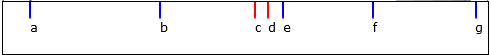
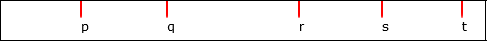
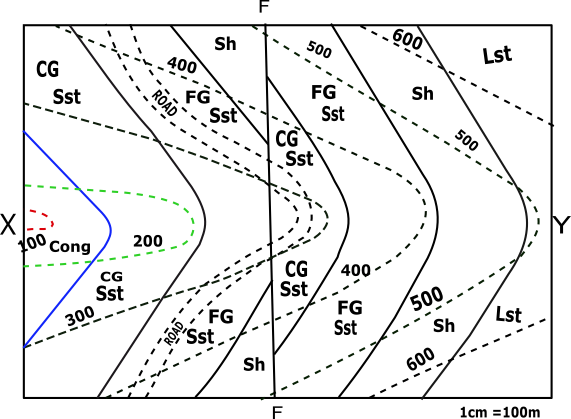
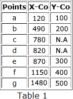
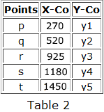
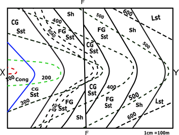
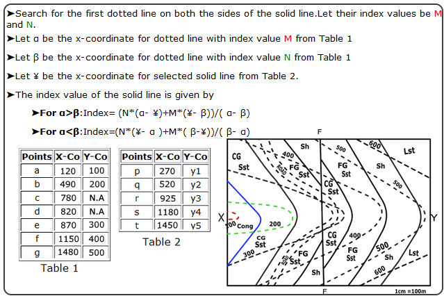
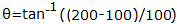
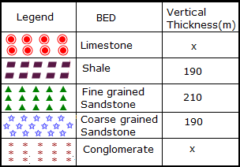
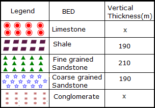

CONTOUR MAP
Objective:
- Draw a geological cross-section along XY.
- Determine the downthrow of the fault.
- A road is proposed as shown in the map.
Pre-requisites:
Topographic map
 Description
Folds: The term fold is used in geology when one or a stack of originally flat, level surfaces, such as sedimentary strata, are bent or curved as a result of pressure and high temperature.
Description
Folds: The term fold is used in geology when one or a stack of originally flat, level surfaces, such as sedimentary strata, are bent or curved as a result of pressure and high temperature.Anticlinal folds: Anticlines are folds in which each half of the fold dips away from the crest.
Synclinal folds: Synclines are folds in which each half of the fold dips toward the trough of the fold.
Fault: Faults are fractures (cracks) in rocks along which movement has occurred.
Dyke: A dyke (or dike) in geology is a type of later vertical rock between older layers of rock.
Ductile: When rocks bend or flow, like clay, it is called ductile deformation.
Identify the line about which the profiles are to be drawn.

Line to be considered for profiles to be drawn:
Mark all the points of XY line that is obtained by the intersection of the dotted line with this XY of the contour map. (except the road part shown by points c and d).

| Points | X-Co | Y-Co |
|---|---|---|
| a | x1 | 100 |
| b | x2 | 200 |
| c | x3 | N.A |
| d | x4 | N.A |
| e | x5 | 300 |
| f | x6 | 400 |
| g | x7 | 500 |
Identify X-axis and Y-axis taking X as origin and define scale.
Plot the points taking its distance from X as x coordinate and the index values of the corresponding line as y coordinate along with the points Y’(1520,0) on the graph.
| Points | X-Co | Y-Co |
|---|---|---|
| a | 120 | 100 |
| b | 490 | 200 |
| c | 780 | N.A |
| d | 820 | N.A |
| e | 870 | 300 |
| f | 1150 | 400 |
| g | 1480 | 500 |
Mark all the points of XY line that is obtained by the intersection of the solid line with this XY of the contour map.

| Points | X-Co | Y-Co |
|---|---|---|
| p | x1 | y1 |
| q | x2 | y2 |
| r | x3 | y3 |
| s | x4 | y4 |
| t | x5 | y5 |
Name the points as p,q,r … respectively taking its distance from X as x-coordinate.
| Points | X-Co | Y-Co |
|---|---|---|
| p | x1 | y1 |
| q | x2 | y2 |
| r | x3 | y3 |
| s | x4 | y4 |
| t | x5 | y5 |
To Calculate the index value of the solid line.
➤Search for the first dotted line on both the sides of the solid line.Let their index values be M and N.
➤Let α be the x-coordinate for dotted line with index value M from Table 1
➤Let β be the x-coordinate for dotted line with index value N from Table 1
➤Let ¥ be the x-coordinate for selected solid line from Table 2.
➤The index value of the solid line is given by
➤For α>β:Index= (N*(α- ¥)+M*(¥- β))/( α- β)
➤For α<β:Index=(N*(¥- α )+M*( β-¥))/( β- α)
   Calculate the index value of all solid lines.
Hint | Table 1 | ||
|---|---|---|
| Points | X-Co | Y-Co |
| a | 120 | 100 |
| b | 490 | 200 |
| c | 780 | N.A |
| d | 820 | N.A |
| e | 870 | 300 |
| f | 1150 | 400 |
| g | 1480 | 500 |
| Table 2 | ||
|---|---|---|
| Points | X-Co | Y-Co |
| p | 270 | y1 |
| q | 520 | y2 |
| r | 925 | y3 |
| s | 1180 | y4 |
| t | 1450 | y5 |
➤For the solid line p:
Plot the above points (p to t) with the plotted points (a to g) along with the points Y’ (1535,0) along with u(710,240) on the graph.
| Points | X-Co | Y-Co |
|---|---|---|
| p | 270 | 140 |
| q | 520 | 208 |
| r | 925 | 320 |
| s | 1180 | 410 |
| t | 1450 | 490 |
| u | 710 | 240 |
Join all the plotted points on the graph free hand. And extrapolate it between the bounds.
Mark road points on the cross section c(780m,280m) and d(829m,290m).
Draw a line perpendicular to X-axis passing through POINT J’(710,0). which is the fault line that is FF, that’s cuts the curve at POINT u(710,240).
Calculation for Angle of dip.
➤Search for the points of intersection between the solid line and the dotted line on the contour map.
T1=100 T2=200
T2>T1
Angle of Dip
θ=27°
From the points (p,q,r,s,t,u) draw a line at an angle θ with horizontal in clockwise direction and its point of intersection on x-axis be (p’,q’,r’,s’,t’,u’) respectively.
➤p-p’☚
➤q-q’☚
➤r-r’☚
➤s-s’☚
➤t-t’☚
➤u-u’☚
Location of Types of stones on the contour.
➤Conglomerate☚
➤Course grainded Sandstone☚
➤Fine grainded Sandstone☚
➤Shale☚
➤Limestone☚
Determination of downthrow of the fault.
Profile View Graph


 

Both ends of the pipe must be trimmed to ensure parallel faces.
Both ends of the pipe must be trimmed to ensure parallel faces.